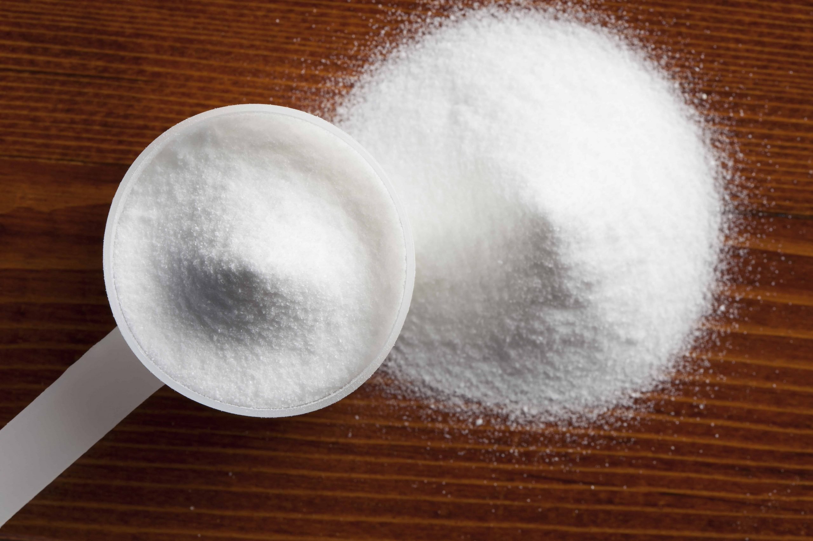
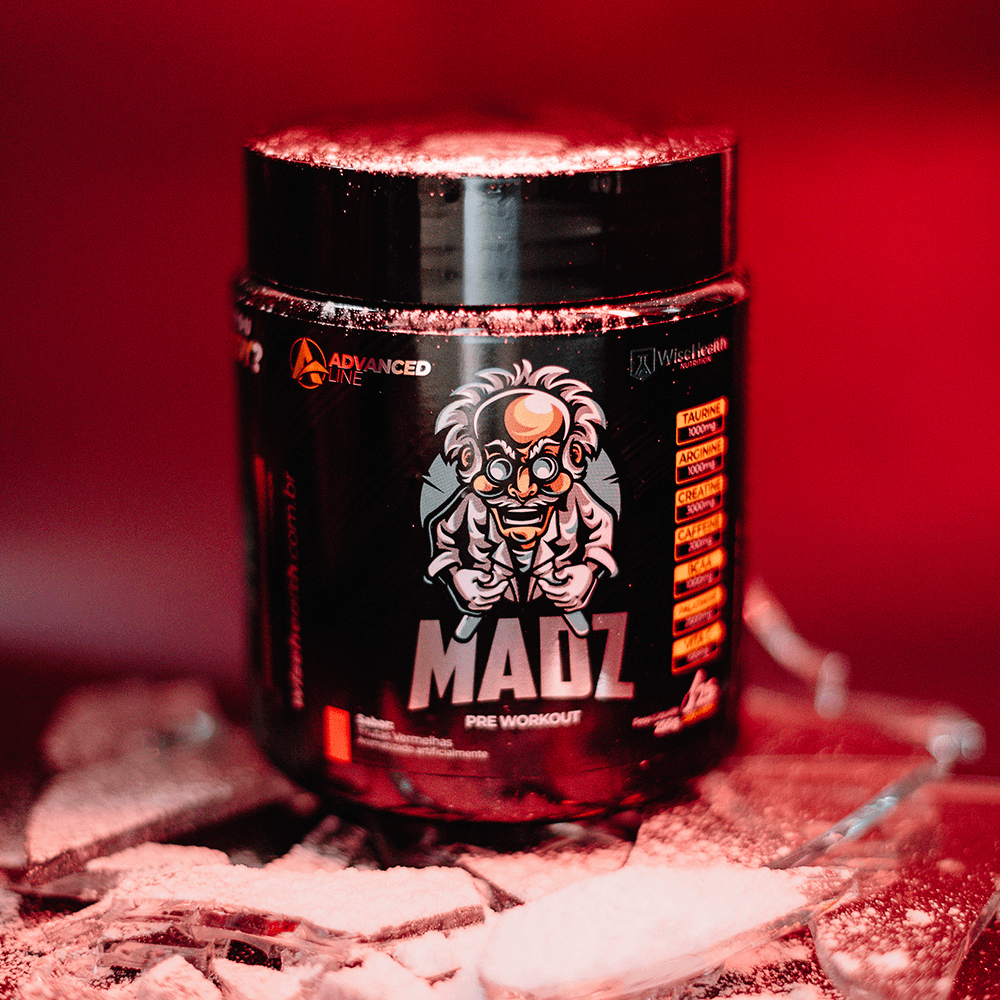
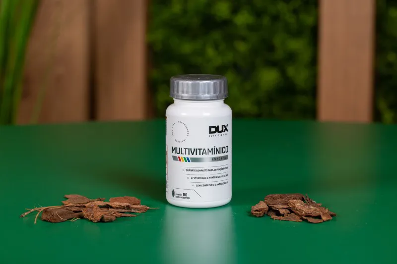

Os suplementos são frequentemente utilizados por pessoas que frequentam academias para maximizar seus resultados e apoiar seu desempenho físico. É importante ressaltar que os suplementos não são necessários para todos, e é sempre recomendado buscar orientação profissional de um nutricionista ou médico antes de iniciar o uso. Os resultados podem variar de pessoa para pessoa, e a dieta e o treinamento adequados são fundamentais para alcançar os objetivos desejados. Vamos agora conhecer alguns dos principais suplementos utilizados por frequentadores de academia:

Proteína em pó (Whey Protein)
O Whey Protein é um dos suplementos mais populares entre os frequentadores de academia. É uma fonte de proteína de alta qualidade, rápida absorção e rica em aminoácidos essenciais. A proteína é fundamental para o crescimento e reparo muscular, e o Whey Protein oferece uma forma conveniente de aumentar a ingestão diária de proteínas. Ele pode ser consumido antes ou depois do treino para ajudar na recuperação muscular e no aumento da síntese proteica. Existem diferentes tipos de Whey Protein, como concentrado, isolado e hidrolisado, com variações na quantidade de gorduras, carboidratos e pureza da proteína.

Creatina
A creatina é um composto natural encontrado nos músculos e também pode ser consumida como suplemento. Ela tem a capacidade de aumentar a produção de energia nos músculos, o que pode melhorar o desempenho físico, aumentar a força e promover o crescimento muscular. A creatina monoidratada é a forma mais comum e amplamente estudada. É recomendado tomar creatina junto com uma fonte de carboidratos para otimizar sua absorção.
Pré-treino
Os suplementos pré-treino são projetados para aumentar a energia, o foco e o desempenho durante os exercícios. Geralmente contêm uma combinação de ingredientes como cafeína, beta-alanina, creatina, aminoácidos e vitaminas do complexo B. A cafeína é um estimulante que pode melhorar a atenção e a concentração, enquanto a beta-alanina pode reduzir a fadiga muscular. Esses suplementos podem proporcionar um aumento temporário no desempenho físico, motivação e resistência. É importante seguir as instruções de dosagem e evitar o consumo excessivo de estimulantes.
Multivitamínicos
Um multivitamínico é uma combinação de vitaminas e minerais essenciais para o corpo. Embora a maioria das pessoas possa obter os nutrientes necessários por meio de uma dieta equilibrada, alguns atletas podem ter necessidades aumentadas devido ao estresse físico e metabólico. Um multivitamínico pode ajudar a prevenir deficiências nutricionais e melhorar a recuperação muscular. É importante escolher um multivitamínico de qualidade e seguir as instruções de dosagem adequadas.
